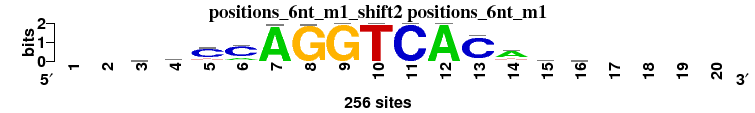
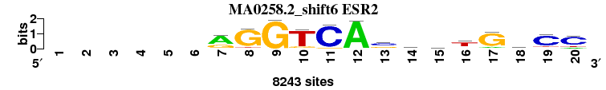
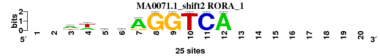
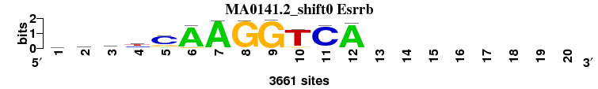
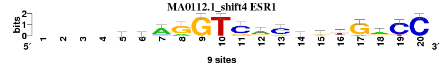
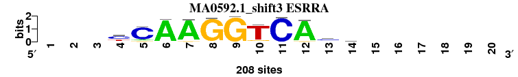
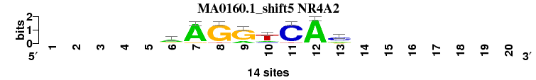
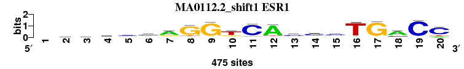
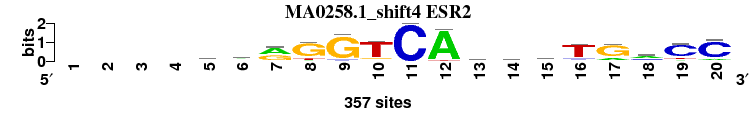

| Matrix name | Aligned logos | cor |
Ncor |
logoDP |
NIcor |
NsEucl |
SSD |
NSW |
rcor |
rNcor |
rlogoDP |
rNIcor |
rNsEucl |
rSSD |
rNSW |
rank_mean |
match_rank |
Aligned matrices |
|---|
| positions_6nt_m1_shift2 (positions_6nt_m1) |
 |
|
|
|
|
|
|
|
|
|
|
|
|
|
|
|
|
; positions_6nt_m1; m=0 (reference); ncol1=14; shift=2; ncol=20; --byCCAGGTCACasw----
; Alignment reference
a 0 0 56 38 22 54 254 0 0 0 0 256 4 172 46 75 0 0 0 0
c 0 0 70 96 185 184 1 2 0 0 256 0 229 28 75 56 0 0 0 0
g 0 0 64 53 21 7 1 254 256 0 0 0 12 20 76 58 0 0 0 0
t 0 0 66 69 28 11 0 0 0 256 0 0 11 36 59 67 0 0 0 0
|
| MA0141.1_shift0 (Esrrb) |
|
0.889 |
0.555 |
9.310 |
0.553 |
0.925 |
1.123 |
0.944 |
3 |
4 |
4 |
4 |
4 |
3 |
3 |
3.571 |
1 |
; positions_6nt_m1 versus MA0141.1 (Esrrb); m=1/9; ncol2=12; w=10; offset=-2; strand=D; shift=0; score= 3.5714; rgsyCAAGGTCA--------
; cor=0.889; Ncor=0.555; logoDP=9.310; NIcor=0.553; NsEucl=0.925; SSD=1.123; NSW=0.944; rcor=3; rNcor=4; rlogoDP=4; rNIcor=4; rNsEucl=4; rSSD=3; rNSW=3; rank_mean=3.571; match_rank=1
a 1054 673 420 259 310 3326 3567 32 21 182 9 3458 0 0 0 0 0 0 0 0
c 800 829 1211 1250 2664 32 2 5 12 46 3376 20 0 0 0 0 0 0 0 0
g 985 1370 1209 448 627 248 60 3586 3602 244 170 129 0 0 0 0 0 0 0 0
t 793 767 805 1693 52 50 27 31 17 3175 85 27 0 0 0 0 0 0 0 0
|
| MA0258.2_shift6 (ESR2) |
 |
0.907 |
0.477 |
7.708 |
0.476 |
0.931 |
0.963 |
0.952 |
1 |
8 |
6 |
8 |
2 |
1 |
1 |
3.857 |
2 |
; positions_6nt_m1 versus MA0258.2 (ESR2); m=2/9; ncol2=15; w=10; offset=4; strand=D; shift=6; score= 3.8571; ------rGGTCAsmstGaCC
; cor=0.907; Ncor=0.477; logoDP=7.708; NIcor=0.476; NsEucl=0.931; SSD=0.963; NSW=0.952; rcor=1; rNcor=8; rlogoDP=6; rNIcor=8; rNsEucl=2; rSSD=1; rNSW=1; rank_mean=3.857; match_rank=2
a 0 0 0 0 0 0 5410 429 59 74 0 8098 502 2092 1808 1602 1121 3278 434 1111
c 0 0 0 0 0 0 96 0 0 147 7621 1 4202 3235 2510 975 398 2056 6469 5854
g 0 0 0 0 0 0 2563 7170 8143 989 533 57 2738 1688 2173 533 6658 1391 363 0
t 0 0 0 0 0 0 174 644 41 7033 89 87 801 1228 1752 5133 66 1518 977 1278
|
| MA0071.1_shift2 (RORA_1) |
 |
0.877 |
0.627 |
10.635 |
0.649 |
0.922 |
1.221 |
0.939 |
6 |
2 |
1 |
2 |
6 |
5 |
5 |
3.857 |
3 |
; positions_6nt_m1 versus MA0071.1 (RORA_1); m=3/9; ncol2=10; w=10; offset=0; strand=D; shift=2; score= 3.8571; --wwcwAGGTCA--------
; cor=0.877; Ncor=0.627; logoDP=10.635; NIcor=0.649; NsEucl=0.922; SSD=1.221; NSW=0.939; rcor=6; rNcor=2; rlogoDP=1; rNIcor=2; rNsEucl=6; rSSD=5; rNSW=5; rank_mean=3.857; match_rank=3
a 0 0 15 9 6 11 21 0 0 0 0 25 0 0 0 0 0 0 0 0
c 0 0 1 1 12 2 0 0 0 0 25 0 0 0 0 0 0 0 0 0
g 0 0 2 0 4 5 4 25 25 0 0 0 0 0 0 0 0 0 0 0
t 0 0 7 15 3 7 0 0 0 25 0 0 0 0 0 0 0 0 0 0
|
| MA0141.2_shift0 (Esrrb) |
 |
0.888 |
0.555 |
9.423 |
0.552 |
0.925 |
1.134 |
0.943 |
4 |
5 |
3 |
5 |
5 |
4 |
4 |
4.286 |
4 |
; positions_6nt_m1 versus MA0141.2 (Esrrb); m=4/9; ncol2=12; w=10; offset=-2; strand=D; shift=0; score= 4.2857; rgsyCAAGGTCA--------
; cor=0.888; Ncor=0.555; logoDP=9.423; NIcor=0.552; NsEucl=0.925; SSD=1.134; NSW=0.943; rcor=4; rNcor=5; rlogoDP=3; rNIcor=5; rNsEucl=5; rSSD=4; rNSW=4; rank_mean=4.286; match_rank=4
a 1055 673 403 260 312 3347 3590 33 12 180 9 3478 0 0 0 0 0 0 0 0
c 801 832 1212 1230 2653 32 2 2 11 43 3394 21 0 0 0 0 0 0 0 0
g 984 1352 1212 449 630 248 60 3597 3622 243 167 128 0 0 0 0 0 0 0 0
t 773 767 807 1702 51 27 6 29 16 3192 85 26 0 0 0 0 0 0 0 0
|
| MA0112.1_shift4 (ESR1) |
 |
0.883 |
0.530 |
7.478 |
0.533 |
0.933 |
1.311 |
0.945 |
5 |
6 |
7 |
6 |
1 |
6 |
2 |
4.714 |
5 |
; positions_6nt_m1 versus MA0112.1 (ESR1); m=5/9; ncol2=18; w=12; offset=2; strand=D; shift=4; score= 4.7143; ----ccAGGTCaCcrtGrCC
; cor=0.883; Ncor=0.530; logoDP=7.478; NIcor=0.533; NsEucl=0.933; SSD=1.311; NSW=0.945; rcor=5; rNcor=6; rlogoDP=7; rNIcor=6; rNsEucl=1; rSSD=6; rNSW=2; rank_mean=4.714; match_rank=5
a 0 0 0 0 1 1 7 2 0 0 0 6 1 2 3 1 1 5 0 0
c 0 0 0 0 5 5 1 0 0 0 7 0 7 5 2 1 0 1 8 9
g 0 0 0 0 1 1 1 7 9 0 2 2 1 1 4 1 8 3 0 0
t 0 0 0 0 2 2 0 0 0 9 0 1 0 1 0 6 0 0 1 0
|
| MA0592.1_shift3 (ESRRA) |
 |
0.864 |
0.679 |
9.939 |
0.661 |
0.920 |
1.542 |
0.930 |
7 |
1 |
2 |
1 |
7 |
7 |
8 |
4.714 |
6 |
; positions_6nt_m1 versus MA0592.1 (ESRRA); m=6/9; ncol2=11; w=11; offset=1; strand=D; shift=3; score= 4.7143; ---yCAAGGTCAcm------
; cor=0.864; Ncor=0.679; logoDP=9.939; NIcor=0.661; NsEucl=0.920; SSD=1.542; NSW=0.930; rcor=7; rNcor=1; rlogoDP=2; rNIcor=1; rNsEucl=7; rSSD=7; rNSW=8; rank_mean=4.714; match_rank=6
a 0 0 0 17 18 200 198 0 0 6 0 197 23 70 0 0 0 0 0 0
c 0 0 0 118 174 2 0 0 0 0 205 1 108 54 0 0 0 0 0 0
g 0 0 0 11 15 6 10 203 207 22 3 10 44 40 0 0 0 0 0 0
t 0 0 0 62 1 0 0 5 1 180 0 0 33 44 0 0 0 0 0 0
|
| MA0160.1_shift5 (NR4A2) |
 |
0.904 |
0.517 |
7.972 |
0.518 |
0.912 |
0.998 |
0.938 |
2 |
7 |
5 |
7 |
8 |
2 |
6 |
5.286 |
7 |
; positions_6nt_m1 versus MA0160.1 (NR4A2); m=7/9; ncol2=8; w=8; offset=3; strand=D; shift=5; score= 5.2857; -----aAGGTCAc-------
; cor=0.904; Ncor=0.517; logoDP=7.972; NIcor=0.518; NsEucl=0.912; SSD=0.998; NSW=0.938; rcor=2; rNcor=7; rlogoDP=5; rNIcor=7; rNsEucl=8; rSSD=2; rNSW=6; rank_mean=5.286; match_rank=7
a 0 0 0 0 0 8 13 0 3 2 0 14 3 0 0 0 0 0 0 0
c 0 0 0 0 0 1 0 0 0 2 13 0 8 0 0 0 0 0 0 0
g 0 0 0 0 0 3 1 13 11 0 0 0 2 0 0 0 0 0 0 0
t 0 0 0 0 0 1 0 1 0 10 1 0 0 0 0 0 0 0 0 0
|
| MA0112.2_shift1 (ESR1) |
 |
0.821 |
0.574 |
4.608 |
0.557 |
0.929 |
1.952 |
0.930 |
8 |
3 |
9 |
3 |
3 |
8 |
7 |
5.857 |
8 |
; positions_6nt_m1 versus MA0112.2 (ESR1); m=8/9; ncol2=20; w=14; offset=-1; strand=D; shift=1; score= 5.8571; -vkscmaGGtCAcccTGaCC
; cor=0.821; Ncor=0.574; logoDP=4.608; NIcor=0.557; NsEucl=0.929; SSD=1.952; NSW=0.930; rcor=8; rNcor=3; rlogoDP=9; rNIcor=3; rNsEucl=3; rSSD=8; rNSW=7; rank_mean=5.857; match_rank=8
a 0 122 107 64 83 134 308 36 19 33 4 398 58 63 64 32 21 305 10 59
c 0 120 80 173 229 232 28 8 18 41 394 13 250 276 258 19 22 106 436 353
g 0 154 164 149 65 47 89 387 420 91 53 27 107 53 97 8 426 31 12 2
t 0 71 117 82 93 57 48 43 18 310 24 37 60 83 56 416 6 33 17 61
|
| MA0258.1_shift4 (ESR2) |
 |
0.781 |
0.469 |
6.610 |
0.464 |
0.911 |
2.297 |
0.904 |
9 |
9 |
8 |
9 |
9 |
9 |
9 |
8.857 |
9 |
; positions_6nt_m1 versus MA0258.1 (ESR2); m=9/9; ncol2=18; w=12; offset=2; strand=D; shift=4; score= 8.8571; ----cwrGGTCAsgkTGmCC
; cor=0.781; Ncor=0.469; logoDP=6.610; NIcor=0.464; NsEucl=0.911; SSD=2.297; NSW=0.904; rcor=9; rNcor=9; rlogoDP=8; rNIcor=9; rNsEucl=9; rSSD=9; rNSW=9; rank_mean=8.857; match_rank=9
a 0 0 0 0 78 158 186 27 18 13 0 337 49 64 52 21 63 178 34 46
c 0 0 0 0 161 51 15 0 20 19 357 1 123 63 61 33 25 99 268 289
g 0 0 0 0 63 41 154 275 319 33 0 0 113 149 147 24 265 19 2 0
t 0 0 0 0 55 107 2 55 0 292 0 19 72 81 97 279 4 61 53 22
|
{kind=link}
{kind=link}
{kind=link}
{kind=link}
{kind=link}
{kind=link}
{kind=link}
{kind=link}
{kind=link}
{kind=link}